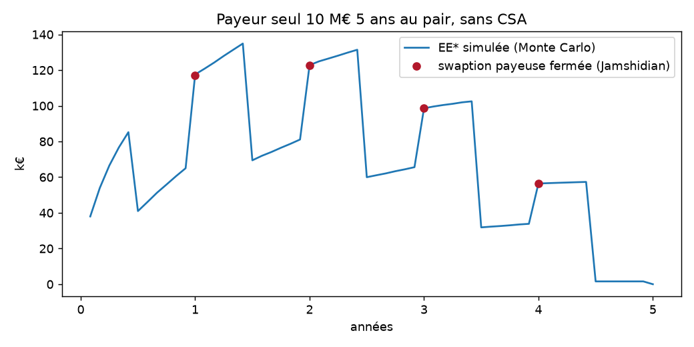
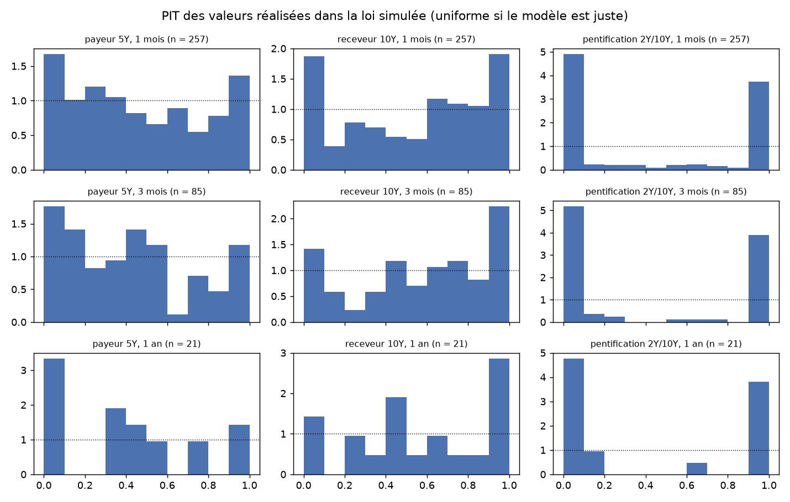
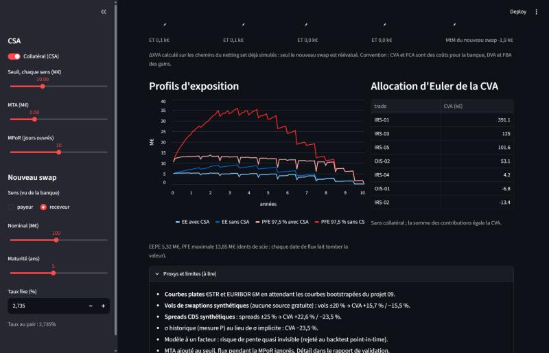

Auto-revue par l'auteur. Une relecture par un tiers reste à faire avant tout usage au-delà de la démonstration. Toutes les données de marché sont synthétiques ou publiques (BCE) ; la contrepartie est fictive.
| Contrôle | Résultat | Verdict |
|---|---|---|
| Prix (IRS, OIS, swaptions, CDS) contre QuantLib 1.44 | écarts < 1e-8 du nominal ; CDS < 0,1 bp | validé |
| EE* d'un swap seul contre swaption fermée (Jamshidian) | écart max 0,46 bp du nominal, sous l'erreur-type (0,87 bp) | validé |
| Convergence Monte Carlo | erreur-type en N−0,504, gain antithétique ×4,1 | validé |
| Sensibilités CRN | somme des deltas par pilier = parallèle à 1 € près, ET < 1 % | validé |
| Backtest point-in-time, positions directionnelles | queues trop épaisses à 1 mois (KS p ≤ 0,005) | limite connue |
| Backtest point-in-time, pentification | rejet net à tous les horizons | hors domaine |
| Sensibilité aux paramètres non observables | vols ±20 % → CVA ±16 % ; spreads ±25 % → CVA ±23 % | proxys à remplacer |
Le moteur est correct pour son usage visé : CVA/DVA/FVA et pré-trade d'un netting set de swaps EUR directionnels. Il n'est pas adapté à un portefeuille dont le risque principal est la pente de la courbe.
| Portefeuille démo (k€, ET) | CVA | DVA | FCA | FBA |
|---|---|---|---|---|
| Sans CSA | 659,7 (3,2) | 227,8 (2,4) | 81,2 (0,3) | 34,2 (0,4) |
| CSA (seuil 10 M€, MTA 0,5 M€, MPoR 10 j) | 446,3 (0,7) | 159,5 (1,1) | 57,0 (< 0,1) | 23,5 (0,2) |
Le CSA retire 32 % de la CVA. Pré-trade (ΔXVA d'un nouveau swap sur les chemins déjà simulés) : 1 à 3 s.
41 tests automatisés (pytest, environ 45 s), dont : martingale E[D] = P(0, t) ; option sur ZC et swaption Jamshidian contre QuantLib ; IRS et OIS contre QuantLib ; E[D·V(t)] égal à la valeur des flux restants, y compris en milieu de période ; PFE égale au quantile fermé dans l'intervalle binomial ; netting sous-additif ; collatéral parfait à MPoR nulle → 0 ; somme des allocations d'Euler = CVA ; pré-trade = recalcul complet ; CVA de la banque = DVA de la contrepartie.

Erreur trouvée et corrigée : la formule de la jambe €STR en cours donnée dans la fiche projet (exp(∫r)·P(t, e) − P(t, e)) est fausse ; la bonne valeur est exp(∫st r) − P(t, e). Le test de martingale l'a détectée.

Une CVA calculée sous P serait inférieure d'un quart : la prime de vol implicite pèse autant qu'un choc de 25 % des spreads. Les deux entrées les plus influentes (vols de swaptions et spreads CDS) sont aujourd'hui synthétiques.
Courbes BCE AAA quotidiennes 2004-2026 (5 665 jours). À chaque date, σ(P) est calibré sur l'année précédente (pas de look-ahead) ; la loi de la valeur à l'horizon est simulée depuis la courbe du jour et la valeur réalisée y est classée (PIT). Fenêtres sans chevauchement. Test de Kolmogorov-Smirnov sur l'uniformité.
| Horizon | Fenêtres | Puissance KS | Payeur 5Y | Receveur 10Y | Pentification |
|---|---|---|---|---|---|
| 1 mois | 257 | 55 % | p 0,005 | p < 0,001 | p < 0,001 |
| 3 mois | 85 | 21 % | p 0,02 | p 0,03 | p < 0,001 |
| 1 an | 21 | 10 % | p 0,08 | p 0,14 | p 0,001 |

Positions directionnelles : les PIT s'accumulent aux deux bords (6 à 10 % des réalisations sous le quantile 2,5 % à 1 mois). Les queues historiques sont plus épaisses que la gaussienne et σ(P) sur un an glissant réagit en retard (2008, 2022). Pentification : avec un seul facteur, 2 ans et 10 ans bougent ensemble ; le modèle ne voit presque aucun risque sur une position neutre en DV01.
| Limite | Impact mesuré ou attendu |
|---|---|
| Courbes plates €STR / EURIBOR 6M (en attendant le projet de courbes) | profils lissés ; pas de pente initiale |
| Vols de swaptions synthétiques | ±20 % → CVA +15,7 % / −15,5 % |
| Spreads CDS synthétiques | ±25 % → CVA +22,6 % / −23,5 % |
| Un facteur | risque de pente invisible (backtest rejeté) |
| Queues gaussiennes | PFE et EE sous-estimées en régime de stress |
| MTA ajouté au seuil, flux pendant la MPoR ignorés | approximation écrite ; effet de second ordre sur l'EE |
| Pas de wrong-way risk, de trade déjà vivant, d'échéancier TARGET2 | non quantifié |
| BA-CVA : poids de risque recopiés de mémoire | à vérifier contre MAR50.16 avant tout usage réglementaire |

Reproduire : pip install -e .[test,rapport], pytest, python -m xva.rapport, streamlit run app.py.